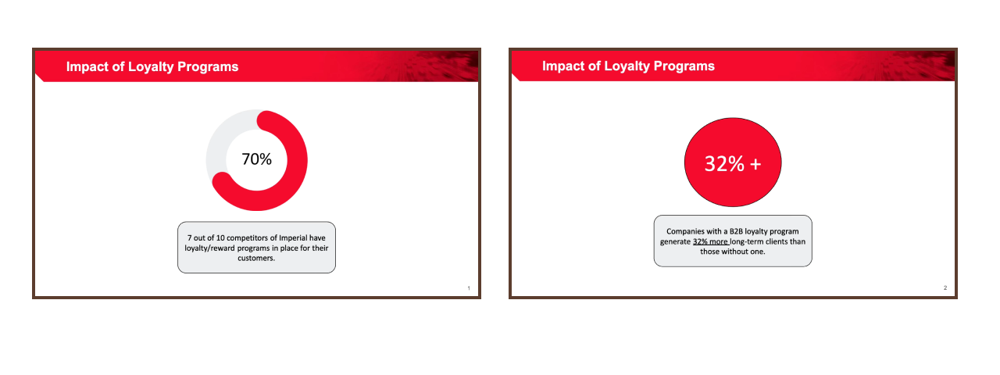
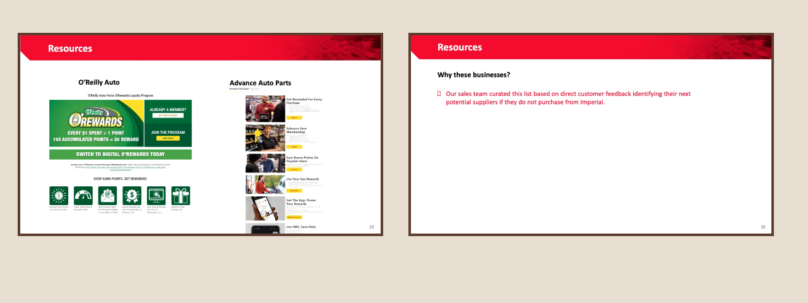
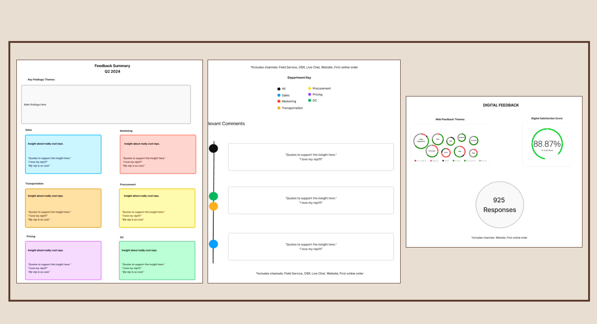
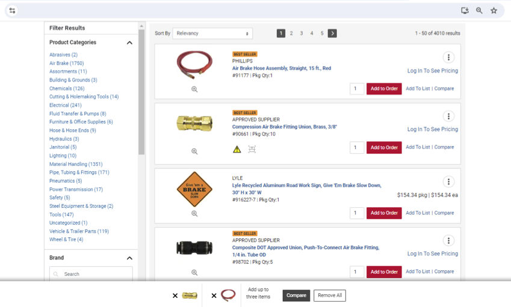

Loyalty/Rewards Research
Imperial Supplies was considering implementing a loyalty/rewards program for their customers and I was tasked with conducting research on their competitors’ programs.
Process
I divided my research into categories for easier comparison of the different types of programs.
Point-Based Program
is individuals accumulating points for certain behaviors, purchases, or achievements.
Tier-Based Program
is customers enjoying different loyalty program benefits depending on their rank.
Membership-Based Program
is customers paying a recurring fee to access exclusive benefits, discounts, or services.
I evaluated the competitors loyalty/rewards structures on these evaluators.
If the company has:
- a loyalty/reward program
- welcome reward/incentive
- benefits
- tiers
- differentiators
- membership cost
- ways to redeem
- non-eligible participants
- restrictions
- rewards expiration
After conducting my research, I then compiled it into a cohesive powerpoint presentation. In my presentation, I included the loyalty statistics of companies with a B2B loyalty program and the structure of competitors’ loyalty/reward programs.

I provided two examples for each type of program and I picked one for each to do a full breakdown of that program.
In my resources part of the presentation, I included screenshots of the graphic design and landing page of the competitors’ loyalty/reward programs. As well as why we picked these competitors to analyze.

Results
- The competitor research project provided valuable insights into the loyalty and rewards programs of Imperial Supplies' competitors
- The analysis revealed the structure, benefits, and customer engagement strategies used by similar companies in the industry.
- No direct actions have been taken based on these findings yet
- The research has laid a solid foundation for potential future discussions on implementing or enhancing loyalty initiatives
Takeaways
- Valuable insights into designing loyalty/rewards programs within a B2B context
- Ability to conduct thorough research, evaluate different program structures, and present actionable findings effectively
- Deeper understanding of mechanisms driving customer engagement and retention
- Strengthened skills in user-centered research, data-driven decision-making, and crafting clear, informative presentations
Q2 VoC Program Insights
The Voice of Customer (VoC) program at Imperial Supplies is still in its early stages, focusing on acting upon customer feedback to effectively close the feedback loop. A significant portion of feedback received through this program pertains to Dedicated Account Advisors (DAAs). Recognizing the value of these insights, my team identified the importance of sharing this information with the sales department. I was responsible for analyzing the feedback, structuring it into a clear and accessible format, and facilitating the collection of responses from the sales team.
Process
I facilitated a round-table discussion with sales leadership, presenting a visual mockup of the proposed quarterly insights layout. I sought leadership’s input on key elements, including the frequency of insights distribution, layout design, content focus, and target recipients.

During this discussion, leadership agreed to adopt a monthly cadence for VoC insights, with a finalized layout and content structure to be sent directly to the leadership team.
I incorporated their feedback into the final infographic for July’s insights

This summary included key data points, such as July’s customer insights, specific customer comments, and the digital satisfaction scores across all feedback channels.
Results
- Improved internal communication by implementing a consistent feedback-sharing process with sales leadership to regularly communicate valuable customer insights
- Reinforced the focus on closing the feedback loop by acting on customer input
- Facilitated an evaluation of the current VoC program, identifying areas for refinement and growth to better serve customers
Takeaways
- Enhanced communication, planning, and organizational skills through project collaboration
- Refined ability to organize and present information in a clear format
- Leading roundtable discussions with thorough preparation, targeted questions, and visual mockups to guide conversations
- Sharpened analytical skills by deeply analyzing VoC program data, identifying key insights, and sharing findings with other teams
Compare Tool Redesign
The compare tool enables users to evaluate different items on the website across various metrics. Previously, this tool was only accessible to internal users at Imperial. However, my task was to make the tool available to external customers and to redesign the user interface for a more user-friendly experience.
Process
Current Compare Tool
Revised Compare Tool

In the current compare tool, users cannot add an item to the compare drawer while searching, there is no identification of the product once it's in the compare drawer, and the ‘x’ to remove an item should be in the top right to follow standard design placements.
In my revision, the ‘Compare’ button will be added next to the ‘Add to List’ button while users are searching for quicker access to the tool, a linkable part number will be added below the image of the tool for easier identification, and the ‘x’ to remove an item will be the top right.
In the current compare tool, when a user tries to add the same item again the error modal has a ‘close’ and ‘cancel’ button and they both perform the same action.
In my revision, I changed the error modal to only have a close button and an ‘x’ to close in the top right.
Results
- Now accessible to customers, a streamlined and user-friendly experience for comparing items on the website
- Redesigned to improve functionality with enhanced ease of use and industry standards designs
- Increased accessibility and practicality, empowering customers to use the tool at their own discretion
Takeways
- Collaborate effectively with developers to achieve design goals
- Researching current design trends and usability best practices to ensure the redesign aligned with industry standards
- Using Figma to prototype, focusing on precise placement of new features for seamless implementation by the development team
- Strengthened skills in design prototyping, communication, and cross-functional collaboration
Daily Meetings
Daily Scrum
This meeting occurred at the beginning of every morning with my team’s manager to ask for any guidance on any projects or dilemmas that we may encounter.
Soft skills: Organization, Blockers, Time management
Discovery/Refinement
This is a biweekly meeting with our team with the web developers to ask them questions on the best approach to incorporate or refine something on the website.
Soft skills: Cross-functional teamwork, communication, strategic thinking
Touchbase
This is a weekly one on one meeting with my mentor for feedback, professional advice, and guidance.
Soft skills: one on one with mentor, feedback, professional advice
Design Review
This is a biweekly meeting with the whole UX team to gather feedback and advice on our current projects and help team members navigate any blockers.
Soft Skills: Collaboration, problem-solving, constructive feedback
Glassbox Review
This is a bimonthly meeting where the UX will analyze Glassbox sessions and curate a list of problematic sessions to address.
Soft skills: analyze, critical thinking, attention to detail
Overall
- Gained significant experience in an agile work environment, enhancing professional and technical skills in UX
- Conducted competitor research, analyzed user experience standards, and developed prototypes aligned with industry best practices
- Worked cross-functionally, collaborating with developers and sales leadership, while refining communication and organizational skills
- Contributed to key projects, including the VoC program and compare tool redesign, deepening understanding of user-centered design and usability
- Built a strong foundation in UX research, prototyping, and collaborative problem-solving, essential for a successful career in product design